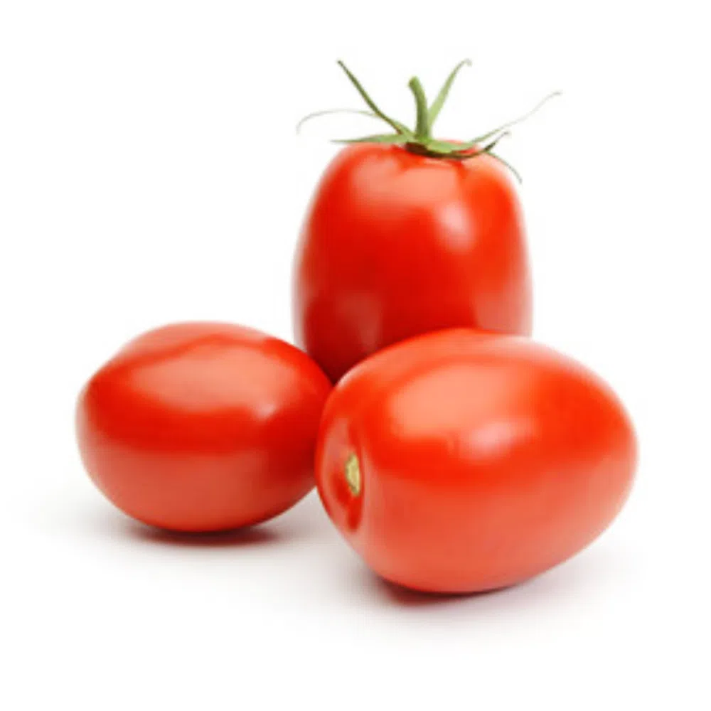

|  | El Tomate Perita en el Mundo |
El tomate pera es un tomate carnoso, dulce, sabroso y con una piel muy fina. Dichas cualidades también lo convierten en el tomate ideal para hacer tomate frito, para comer en ensalada y para untar en el pan. Fruto híbrido de la tomatera que recibe este nombre debido a su característica forma alargada y oblonga.
“Si comparamos Valley Gold con otras variedades protegidas del mercado, es muy económica" Desarrollan una herramienta de cálculo del coste de producción de cítricos en la Región de Murcia “Las previsiones que tenían los productores en Almería no se están ajustando a la realidad” Las consecuencias de la menor cosecha de manzanas de Washington y de la bajada de calibres El paro de camioneros pone en jaque el transporte de 25.000 toneladas de cerezas en Chile Top 5 - La semana pasada Tiendas de Francia colocan las clementinas a 7 €/kg mientras en España una cadena baja su precio un 25% hasta 1,49 € Los cítricos españoles arrancan el mes de noviembre con cotizaciones de las más altas de los últimos años La persistente sequía ralentiza la temporada de Nadorcott en Marruecos ¿Quienes suministrarán las naranjas y mandarinas de origen España a Mercadona esta temporada? "Inicio de temporada muy bueno gracias al comienzo tardío de las naranjas Navelina españolas" Top 5 - El mes pasado Tiendas de Francia colocan las clementinas a 7 €/kg mientras en España una cadena baja su precio un 25% hasta 1,49 € Subidas generalizadas para los cítricos a finales de octubre "en un contexto de las mejores cotizaciones de los últimos años” Los cítricos españoles arrancan el mes de noviembre con cotizaciones de las más altas de los últimos años "Las variedades de cítricos únicas convierten a Marruecos en un proveedor clave para los EE. UU." “Al comprar una naranja Demeter no estás comprando una fruta cualquiera, estás comprando una historia” Llegan los primeros volúmenes españoles a Países Bajos "El tomate Intense sigue siendo un producto popular entre las plantas de corte" Los primeros tomates pera Intense de cultivo español llegaron la semana pasada a la empresa holandesa PZ Import. Cuando se le pregunta si este tomate se convertirá en un producto de éxito este invierno, dada la menor producción holandesa, Paul Zuijderwijk responde: "Solo lo sabremos al final de la temporada, ya que tal vez, debido a la inflación, los consumidores colocarán dos en lugar de cuatro tomates en su cesta de compra".
| 1920 | 1940 | 1980 | Actualidad |
|---|---|---|---|
| 🍅🍅 | 🍅 | 🍅🍅 | 🍅🍅🍅 |